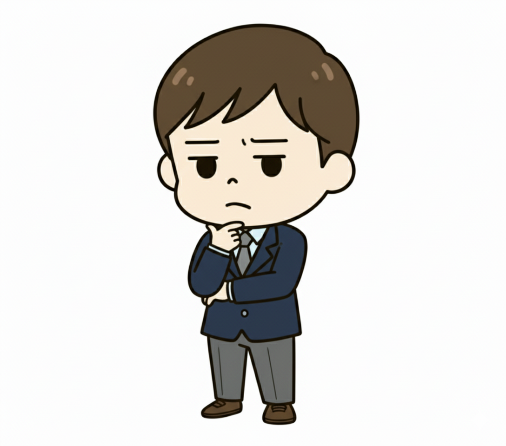
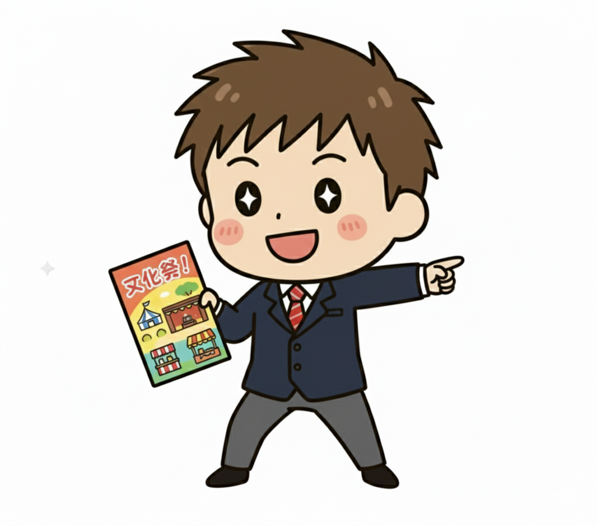

CIRT - 平和を愛する相談役タイプ
「うんうん、それで？」仲間の話を優しく聞き、クラスの和を保つみんなのカウンセラー

１．基本性格
あなたは、友達グループの平和と調和を何よりも大切にする、心優しき「相談役」です。クラスの中心で目立つことよりも、誰かが悩んでいる時にそっと隣に座り、ただ静かに話を聞くことに自分の役割を見出します。相手の言葉の裏にある本当の気持ちを直感的に察することが得意で、決して否定せずに耳を傾けるあなたの周りには、自然と人が集まってきます。あなたにとって学校生活とは、勝ち負けではなく、みんなが穏やかに笑っていられる空間を創ることなのです。
２．あなたの強み
最大の武器は、その卓越した傾聴力と、場を和ませる温かい雰囲気です。あなたの前では、誰もが安心して本音や弱音を吐き出すことができます。友達同士がギクシャクしている時も、あなたが間に入ることで、いつの間にか場の空気が和らいでいる、といったことも多いでしょう。その深い共感力は、多くの友人から絶大な信頼を寄せられ、あなたはグループにとって不可欠な「心の安全地帯」となります。
３．あなたの弱み
グループの平和を願うあまり、自分の意見を主張したり、誰かと対立したりすることを極端に避ける傾向があります。たとえ自分が正しいと思っていても、場の空気を壊すくらいなら…と、黙って我慢してしまうことも。また、常に聞き役であるため、自分自身の悩みや不安を誰にも打ち明けられず、一人で抱え込んでしまいがちです。NOと言えない優しさから、気づけば自分ばかりが損な役回りを引き受けている、という場面もあるかもしれません。
４．ワンポイントアドバイス
あなたの存在は、周りの人々にとって癒やしそのものです。その優しさを自分自身にも向けてあげましょう。時には、「今は自分の時間も大切にしたいから、ごめんね」と勇気を出して断ることも、長い目で見ればあなたと友達の良い関係を保つことに繋がります。また、あなたの意見は、周りを思いやる気持ちに満ちています。対立を恐れず、「みんなのために、私はこう思うな」と、そっと伝えてみてください。あなたの言葉は、きっとみんなの心に届くはずです。
５．他のタイプとの相性
🤝 【響き合う二人】
CLRS静かに思考する哲学者
✨ 【鏡合わせの二人】
CIMT学校行事の企画者
🌗 【光と影の二人】

ALMS進学クラスの優等生
💧 【水と油の二人】

AIRS帰宅部の天才